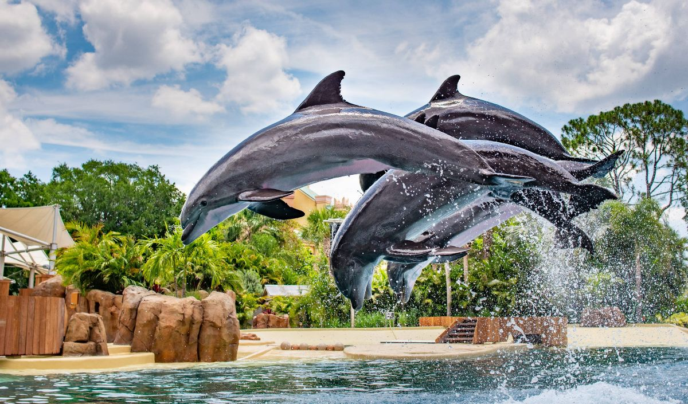
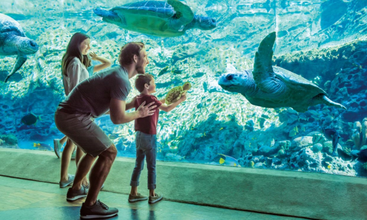
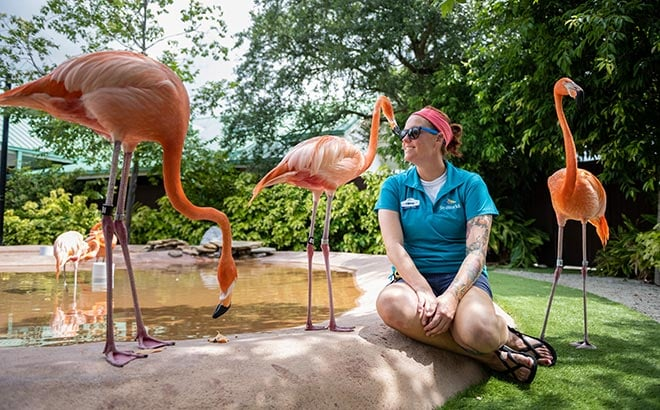

Bem-vindo ao AquaImperial
Mergulhe e descubra o encanto das maravilhas aquáticas

Venha nos conhecer
Descubra um reino onde a majestade dos oceanos encontra a grandiosidade da vida marinha. No AquaImperial, proporcionamos uma experiência única e inesquecível, onde cada visitante é convidado a explorar a beleza e a diversidade dos mares em um ambiente de pura elegância e sofisticação.
Nosso parque temático e zoológico marinho é cuidadosamente projetado para oferecer um refúgio de aprendizado e diversão, permitindo que você e sua família mergulhem em aventuras subaquáticas fascinantes. Das majestosas baleias aos coloridos recifes de coral, cada canto do AquaImperial revela os segredos mais encantadores do mundo marinho.
Conhecer maisAtrações
No AquaImperial, cada visitante encontra um mundo de maravilhas e aventuras aquáticas. Nossas atrações são cuidadosamente planejadas para proporcionar experiências inesquecíveis que encantam e educam.
- Grande Aquário Imperial
- Baía dos Golfinhos
- Lagoa das Tartarugas
- Teatro Oceânico
- Reino das Medusas
- Aventura no Submarino


Conservação e Sustentabilidade
No AquaImperial, nosso compromisso vai além de oferecer experiências inesquecíveis aos nossos visitantes. Estamos dedicados à preservação e conservação dos oceanos e da vida marinha. Acreditamos que cada visitante pode se tornar um defensor dos mares, e por isso, implementamos diversas iniciativas para promover a sustentabilidade e a educação ambiental.
Estamos envolvidos em programas de reabilitação de animais marinhos resgatados e colaboramos com biólogos marinhos em projetos para restaurar e proteger os recifes de coral, essenciais para a biodiversidade oceânica. Convidamos você a se juntar a nós nessa jornada de descoberta e proteção dos mares.
Saiba MaisO que dizem nossos visitantes
Experiências reais de quem viveu a magia do AquaImperial
Uma experiência mágica! Meus filhos ficaram encantados com os golfinhos. O parque é lindo e muito bem cuidado. Voltaremos com certeza!
O mergulho no Grande Aquário foi a melhor experiência da minha vida! A equipe é super profissional e atenciosa. Imperdível!
Fiz meu aniversário no AquaImperial e foi perfeito! A equipe de eventos cuidou de tudo. A decoração do espaço é incrível.
O Teatro Oceânico é espetacular! Os shows com as orcas e golfinhos são emocionantes. O reino das medusas é hipnotizante.
Levei minha turma da escola e todos adoraram! Os workshops educacionais são excelentes. As crianças aprenderam muito se divertindo.
Uma experiência mágica! Meus filhos ficaram encantados com os golfinhos. O parque é lindo e muito bem cuidado. Voltaremos com certeza!
O mergulho no Grande Aquário foi a melhor experiência da minha vida! A equipe é super profissional e atenciosa. Imperdível!
Fiz meu aniversário no AquaImperial e foi perfeito! A equipe de eventos cuidou de tudo. A decoração do espaço é incrível.
O Teatro Oceânico é espetacular! Os shows com as orcas e golfinhos são emocionantes. O reino das medusas é hipnotizante.
Levei minha turma da escola e todos adoraram! Os workshops educacionais são excelentes. As crianças aprenderam muito se divertindo.